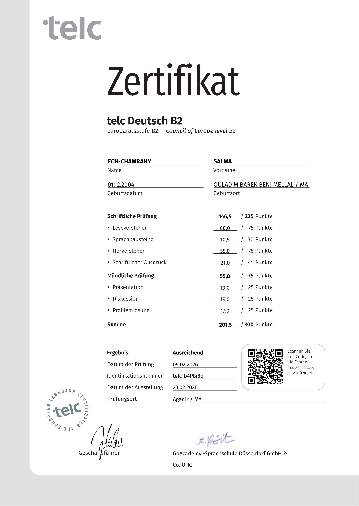

Berufliche Erfahrung
Pflegepraktikum - Grundpflege & Patientenbetreuung
Marokkanischer Verein für Soziales Handeln (A.M.A.S.)
- Durchführung der Grundpflege und Unterstützung bei der Alltagsbewältigung
- Vitalparameter (RR, Puls, Temp., SpO₂) gemessen, überwacht und dokumentiert
- Zustand der Betreuten beobachtet und Veränderungen frühzeitig gemeldet
- Hygiene- und Desinfektionsvorschriften konsequent eingehalten
Praktikum - Soziale Betreuung & Pflege
Marokkanische Organisation für Rettung und Hilfe (O.M.S.A)
- Aktive Unterstützung bei der persönlichen Körperpflege, Mobilisation und Nahrungsaufnahme
- Psychosoziale Betreuung durchgeführt zur aktiven Entgegenwirkung von Einsamkeit
- Begleitung bei Spaziergängen und Arztbesuchen
Ausbildung
Diplom - Pflege älterer Menschen
Institut MEDHIP für Paramedizinische Fachrichtungen (I.M.S.P) - staatlich anerkannt
- Professioneller und empathischer Umgang mit älteren Menschen
- Grundkenntnisse in der Pflege und Gesundheitsüberwachung
- Verständnis für psychische Bedürfnisse und altersbedingte Veränderungen
- Kenntnisse über häufige Erkrankungen im Alter
- Unterstützung bei einer angepassten und gesunden Ernährung
- Erste Hilfe und Notfallmanagement
Abitur (Baccalauréat) - Naturwissenschaften SVT
Gymnasium El Maari - Akademie Sous-Massa
- Schwerpunkte: Biologie, Chemie, Anatomie, wissenschaftliche Methodik
Kompetenzen
🏥 Pflegefachlich
Grundpflege und Altenpflege, Kontrolle der Vitalzeichen (RR, Puls, Temp., SpO₂), Erste Hilfe und Notfallmanagement, Hygiene und Infektionsprävention.
💻 Digital
Microsoft Office 365 (Word, Excel, Outlook, PowerPoint), Adobe Photoshop, Canva, Grundlagen Pflegedokumentation.
🤝 Sozial
Empathie & Teamfähigkeit, Belastbarkeit & Verantwortungsbewusstsein, schnelle Auffassungsgabe.
Sprachkenntnisse
ArabischMuttersprache
DeutschB2 (gute Kenntnisse) – telc zertifiziert
FranzösischB2 (gute Kenntnisse)
Zertifikate & Weiterbildungen
Microsoft 365 Fundamentals Specialization
Coursera / Microsoft – März 2026
📜
telc Deutsch B2
GoAcademy! Sprachschule Düsseldorf – Februar 2026
⭐ B2
B1-Deutschkurs (GER)
Centre Bayern de la Langue Allemande, Agadir – Juli 2025
📘
Erste Hilfe - Grundausbildung
Marokkanischer Roter Halbmond (Croissant-Rouge), Agadir – Mai 2025
🩺
First Aid for Adults
IFRC Learning Platform (International) – Januar 2025
🌍
Offizielle Prüfungsurkunde – telc Deutsch B2

📄 IMG-20260402-WA0005.jpg – Original telc B2 Zertifikat (GoAcademy! Düsseldorf, Februar 2026)